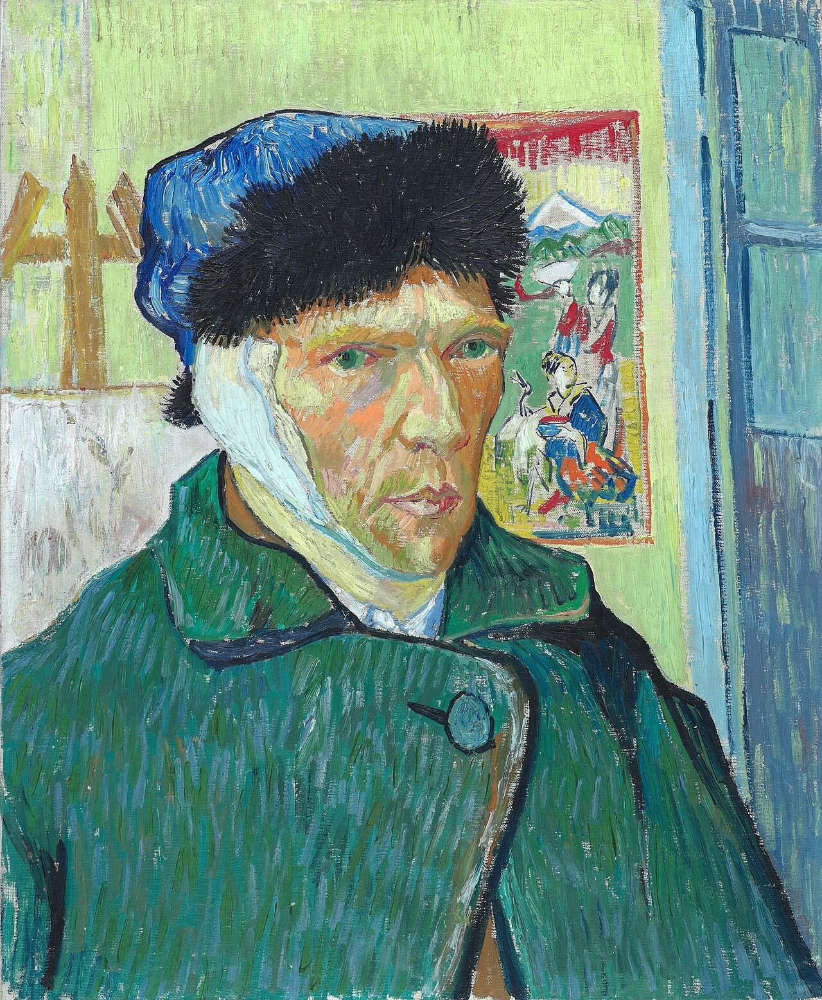

包扎耳朵的自画像 Self-Portrait with Bandaged Ear
梵高 · 1889年1月 · 伦敦考陶尔德美术馆（塞缪尔·考陶尔德信托）
Vincent van Gogh · January 1889 · The Courtauld, London (Samuel Courtauld Trust)
图片：Wikimedia Commons，公有领域 / Image: Wikimedia Commons, public domain

发现 · Discover
镜子里的他 In the mirror
他是对着镜子画的。所以画里缠着绷带的是右耳，其实受伤的是左耳。
He painted himself in a mirror, so the bandage appears on his right ear, though it was his left ear that was injured.
毛皮帽子 The fur cap
毛皮帽子既能固定厚厚的绷带，也能抵御冬天的寒冷。
The fur cap holds the thick bandage in place and keeps out the winter cold.
画架 The easel
身后画架上，是一张刚开始画的画布。它表明他还要继续画下去。
On the easel behind him is a canvas just begun, a sign that he meant to keep painting.
日本版画 The Japanese print
墙上是一幅19世纪70年代的日本版画，出自佐藤虎清之手。梵高把它挂在自己画室的墙上，日本版画是他重要的灵感来源。
On the wall is a Japanese print from the 1870s by Sato Torakiyo, which Van Gogh hung in his studio. Japanese prints were an important source of inspiration for him.
一周后 A week later
这幅画是他出院一周后画的。
He painted this a week after leaving hospital.
颜色 The colours
绿色的外套，深色的帽子，身后的窗户和版画。他用笔触和颜色，宣告自己作为画家的雄心又回来了。
A green coat, a dark cap, the window and print behind him. Through brushwork and colour, he declares his renewed ambition as a painter.
故事 · The story
ACT I 第一幕 · 一次危机 A crisis
1888年12月，高更来到阿尔勒两个月后，两人激烈争吵。之后，梵高在一次精神危机中伤了自己的耳朵，住进了医院。高更离开了阿尔勒。
In December 1888, two months after Gauguin arrived in Arles, the two painters quarrelled violently. Soon after, in a mental crisis, Van Gogh injured his ear and was taken to hospital. Gauguin left Arles.
1889年1月 · 伦敦考陶尔德美术馆 / January 1889 · The Courtauld, London
ACT II 第二幕 · 回到画架前 Back to the easel
1889年1月，出院一周后，他画下了这幅自画像。身后是一张刚开始画的画布，和一幅他喜爱的日本版画。
In January 1889, a week after leaving hospital, he painted this self-portrait, with a canvas just begun behind him, and a Japanese print he loved.
1889年1月 · 伦敦考陶尔德美术馆 / January 1889 · The Courtauld, London
ACT III 第三幕 · 来到伦敦 In London
1948年，收藏家塞缪尔·考陶尔德把它遗赠给了考陶尔德。今天，它挂在考陶尔德美术馆3层的LVMH大厅。
In 1948, the collector Samuel Courtauld bequeathed it to The Courtauld. Today it hangs in the LVMH Great Room, on Level 3 of The Courtauld Gallery.
1889年1月 · 伦敦考陶尔德美术馆 / January 1889 · The Courtauld, London
他回到了画架前。 He went back to his easel.
作品档案 · Artwork record
| 画家（生卒年） · Artist (dates) | 文森特·梵高（1853–1890） / Vincent van Gogh (1853–1890) |
|---|---|
| 画名 · Title | 包扎耳朵的自画像 / Self-Portrait with Bandaged Ear |
| 年份 · Date | 1889年1月，阿尔勒 / January 1889, Arles |
| 材质 · Medium | 布面油画 / Oil on canvas |
| 尺寸 · Dimensions | 60.5 × 50 cm |
| 收藏地 · Collection | 伦敦考陶尔德美术馆（塞缪尔·考陶尔德信托） / The Courtauld, London (Samuel Courtauld Trust) |
| 来源说明 · Credit line | 1948年塞缪尔·考陶尔德遗赠 / Samuel Courtauld bequest, 1948 |
关于画家 · About the artist
文森特·梵高（1853–1890），荷兰画家。他将近27岁才开始画画，短短十年留下了大量作品。1888年他来到法国南部的阿尔勒，在那里画出了许多最著名的画。
Vincent van Gogh (1853–1890) was a Dutch painter. He began painting at around 27 and left a huge body of work in just ten years. In 1888 he moved to Arles in the south of France, where he painted many of his best-known works.
更多梵高的画 · More by Vincent van Gogh